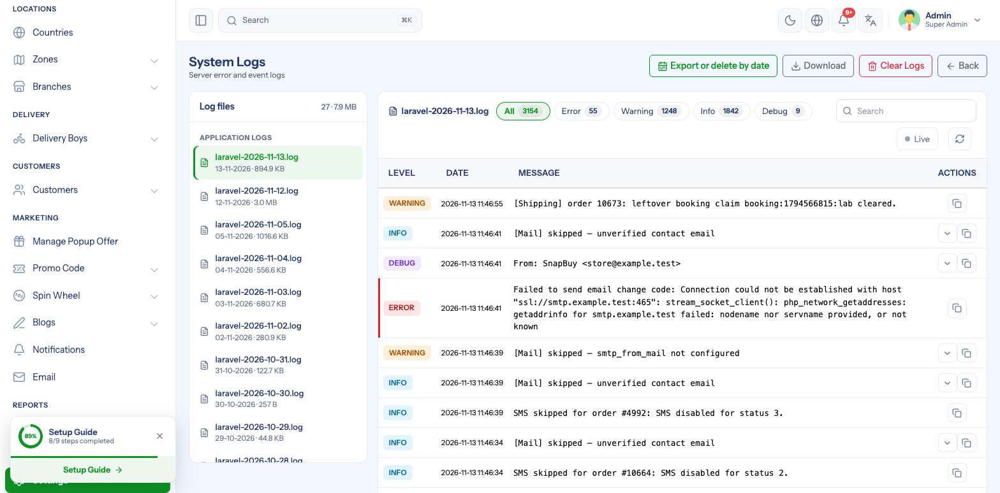

System Logs
Menu path: Settings → Advanced → System Logs
The server's own error and event logs — the files in storage/logs — read inside the panel. When something failed and you need the reason rather than the symptom, this is where it is written down.

Not the same as Activity Logs
Activity Logs records who did what in the panel — a staff audit trail. System Logs records what the application hit: failed jobs, rejected webhooks, SMTP errors, exceptions. Different question, different page.
The file list
Files are listed newest first, with their size and date, under a heading that totals how many files there are and how much disk they take. The one being written today is the one you usually want.
| Kind | Files | Holds |
|---|---|---|
| Application logs | laravel*.log | Errors and exceptions from the panel, the APIs and background jobs |
| Webhook logs | webhooks*.log | What payment and courier providers sent you, and what SnapBuy made of it |
| Other logs | anything else | Whatever else your server writes there |
Only plain .log files sitting directly in storage/logs can be opened — nothing outside that folder is reachable from this page.
Reading a file
| Control | What it does |
|---|---|
| Level chips | All, then every level present in that file — Error, Warning, Info, Debug and the rest — each with a count. Click one to show only that level. |
| Search | Matches the message and the full details, not just the first line |
| Details | Expands one entry to its stack trace or context |
| Copy | Copies that entry, ready to paste into a support ticket |
| Live | Re-reads the open file every 10 seconds, so you can watch while reproducing a problem |
| Per page | Up to 200 entries at a time |
Reproduce it with Live on
Open the file, turn Live on, then trigger the thing that fails — place the test order, send the test email. The entry appears within ten seconds, with the real reason.
Big files are read from the end
Only the newest 4 MB of a file is parsed, so even a very large log opens quickly. The page says so when that happens, and Download always gives you the whole file.
Secrets are masked
Passwords, API keys, tokens, Authorization headers, OTPs, PINs, card numbers and CVVs are replaced with •••• before a line ever leaves the server — in the viewer, in a single download and in a bulk ZIP alike. Keys in recognisable provider formats (sk_live_…, rzp_…, whsec_…) are masked too.
Masking is good, not perfect
It catches the usual shapes. Before you post a log into a public forum or ticket, still read what you are pasting — a provider may have written a value in a format nothing can recognise.
Downloading and clearing
| Button | What it does |
|---|---|
| Download | The open file in full, masked |
| Clear logs | Empties the open file. A past day's dated file is deleted instead, because it will never be written again. |
| Export or delete by date | Works across many files at once |
Export or delete by date
Pick a date range — last 7, 30 or 90 days, or your own — and which log types to include. The dialog shows how many files and how much disk space that comes to, then:
- Download ZIP — every matching file in one archive, each masked
- Delete — removes them
Clearing cannot be undone
There is no copy anywhere else. Download first if there is any chance you will want the file later — especially before clearing a day on which something went wrong.
Today's files are still being written, so they are emptied rather than deleted; everything older is removed.
What to look for
| Problem | Where to look |
|---|---|
| Payment taken but the order stayed unpaid | Webhook logs — whether the gateway called at all, and what was rejected |
| Emails not arriving | Application logs, around the time of the send — SMTP errors are recorded in full |
| Notifications not arriving | Application logs — Firebase rejects the send with a reason |
| Background work not happening | Application logs, plus the failed-jobs count on System Health |
| A page in the panel erroring | Application logs at ERROR level, with the stack trace in Details |
Housekeeping
Log files grow quietly and are a common cause of a full disk. System Health shows their total size under Storage; use Export or delete by date to clear anything older than a month or two once you have no open issues.
Troubleshooting
| Symptom | Cause | Fix |
|---|---|---|
| No log files listed | Nothing has been logged yet, or storage/logs is not readable | Check the folder exists and is writable — System Health flags this |
| A file will not clear | The web-server user cannot write to it | Fix the file's ownership or permissions |
| Bulk ZIP fails | The server's PHP has no zip extension | Enable zip, or download files one at a time |
| Entries look truncated | The file is larger than 4 MB | Use Download for the whole thing |
| The log is enormous | Nothing clears it automatically | Delete by date, and fix whatever is erroring repeatedly |
Checklist
- You know which file is which — application vs webhook
- Checked the log before escalating a "nothing happens" report
- Downloaded anything you may need before clearing
- Log folder size reviewed on System Health